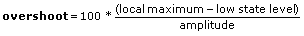

Accepts an input signal of a single waveform or an array of waveforms and measures the transition duration (rise or fall time), slew rate, undershoot, and overshoot of a selected positive or negative transition in each waveform. Wire data to the signal in input to determine the polymorphic instance to use or manually select the instance.
Note The terminology and measurement definitions for this VI comply with IEEE Standard 181-2003, IEEE Standard on Transitions, Pulses, and Related Waveforms.
edge number specifies the transition to measure. An edge number of n with rising polarity selected indicates that the VI measures the nth rising transition it detects in the input waveform.
signal in is the waveform to measure. The waveform is required to contain at least edge number transitions in the direction specified by polarity. A rising transition is the interval between adjacent rising low ref level and high ref level crossings. A falling transition is the interval between adjacent falling high ref level and low ref level crossings.
polarity specifies the direction of the transition to measure as rising (default) or falling.
reference levels specifies the high and low reference levels required to determine the transition interval. mid ref level is not used in transition measurements. Reference levels provide a means to identify the position in time of the waveform feature measured.
high ref level specifies the high reference level of the waveform in percent (default) or absolute units. A rising high ref level crossing defines the end of a rising transition and a falling high ref level crossing defines the beginning of a falling transition.
mid ref level specifies the middle reference level in percent (default) or absolute units. mid ref level is not used in transition measurements.
low ref level specifies the low reference level of the waveform in percent (default) or absolute units. A rising low ref level crossing defines the beginning of a rising transition and a falling low ref level crossing defines the end of a falling transition.
ref units specifies whether the high ref level, mid ref level, and low ref level inputs are interpreted as a percentage (default) of the full range of the waveform or as absolute levels.
error in describes error conditions that occur before this node runs. This input provides standard error in functionality.
percent level settings specifies the method LabVIEW uses to determine the high and low state levels of a waveform. If you select percent ref units, percent level settings determines the reference levels. Otherwise, LabVIEW ignores this input.
method specifies how LabVIEW computes the high and low state levels of the waveform.
0
Histogram—Returns the levels of the histogram bins with the maximum number of hits in the upper and lower regions of the waveform. The upper and lower regions of the waveform include the upper and lower 40%, respectively, of the peak-to-peak range of the waveform.
1
Peak—Searches the entire waveform for its maximum and minimum levels.
2
Auto select (default)—Determines whether the histogram bins that correspond to the high and low state levels each have over 5% of the total hits. If so, LabVIEW returns those results. Otherwise, LabVIEW uses the peak method. This ensures a reasonable answer for either a square wave (ignoring the overshoot and undershoot) or a triangle wave (where a histogram fails).
histogram size specifies the number of bins in the histogram LabVIEW uses to determine the high and low state levels of the waveform.
histogram method specifies how LabVIEW computes the high and low state levels of the waveform. Currently, mode is the only available histogram method.
0
mode
reserved is reserved for future use.
slope is a measure of the rate of change of the signal in a transition region between high ref level and low ref level. slope is given by the following equation.
where transition duration is the transition duration for either rising or falling transition polarity and high ref level and low ref level are in absolute units.
transition duration is the time span from when the waveform crosses the low ref level until it crosses the high ref level in seconds for a rising transition polarity. The measurement starts at the left edge of the waveform and finds all low ref level crossings preceding the first high ref level crossing. The final low ref level crossing is used in the calculation. A rising polarity transition duration is known as rise time, and a falling polarity transition duration is known as fall time, as shown in the following example:
pre-transition contains the undershoot and overshoot for the waveform in signal in. Refer to the Details section for more information about the pre-transition output.
undershoot measures the height of the local minimum preceding a rising or falling transition, which depends on the polarity you specify. Undershoot measures the height as a percentage of the histogram-based amplitude of the signal.
overshoot measures the height of the local maximum preceding a rising or falling transition, which depends on the polarity you specify. Overshoot measures the height as a percentage of the histogram-based amplitude of the signal.
post-transition contains the undershoot and overshoot for the waveform in signal in. Refer to the Details section for more information about the post-transition output.
undershoot measures the height of the local minimum following a rising or falling, as set by polarity, transition as a percentage of the histogram-based amplitude of the signal.
overshoot measures the height of the local maximum following a rising or falling, as set by polarity, transition as a percentage of the histogram-based amplitude of the signal.
error out contains error information. This output provides standard error out functionality.
measurement info returns the transition interval end points and the absolute reference levels used to define the transition.
start time specifies the time of the rising (falling) low (high) ref level crossing that defines the start of the transition to be measured.
end time specifies the time of the rising (falling) high (low) ref level crossing that defines the end of the transition to be measured.
ref levels returns the three user-defined reference levels of the waveform in absolute units. LabVIEW uses the reference levels to define the interval of one cycle measurement.
edge number specifies the transition to measure. An edge number of n with rising polarity selected indicates that the VI measures the nth rising transition it detects in the input waveform.
signal(s) in is the array of waveforms to measure. The waveform is required to contain at least edge number transitions in the direction specified by polarity. A rising transition is the interval between adjacent rising low ref level and high ref level crossings. A falling transition is the interval between adjacent falling high ref level and low ref level crossings.
polarity specifies the direction of the transition to measure as rising (default) or falling.
reference levels specifies the high and low reference levels required to determine the transition interval. mid ref level is not used in transition measurements. Reference levels provide a means to identify the position in time of the waveform feature measured.
high ref level specifies the high reference level of the waveform in percent (default) or absolute units. A rising high ref level crossing defines the end of a rising transition and a falling high ref level crossing defines the beginning of a falling transition.
mid ref level specifies the middle reference level in percent (default) or absolute units. mid ref level is not used in transition measurements.
low ref level specifies the low reference level of the waveform in percent (default) or absolute units. A rising low ref level crossing defines the beginning of a rising transition and a falling low ref level crossing defines the end of a falling transition.
ref units specifies whether the high ref level, mid ref level, and low ref level inputs are interpreted as a percentage (default) of the full range of the waveform or as absolute levels.
error in describes error conditions that occur before this node runs. This input provides standard error in functionality.
percent level settings specifies the method LabVIEW uses to determine the high and low state levels of a waveform. If you select percent ref units, percent level settings determines the reference levels. Otherwise, LabVIEW ignores this input.
method specifies how LabVIEW computes the high and low state levels of the waveform.
0
Histogram—Returns the levels of the histogram bins with the maximum number of hits in the upper and lower regions of the waveform. The upper and lower regions of the waveform include the upper and lower 40%, respectively, of the peak-to-peak range of the waveform.
1
Peak—Searches the entire waveform for its maximum and minimum levels.
2
Auto select (default)—Determines whether the histogram bins that correspond to the high and low state levels each have over 5% of the total hits. If so, LabVIEW returns those results. Otherwise, LabVIEW uses the peak method. This ensures a reasonable answer for either a square wave (ignoring the overshoot and undershoot) or a triangle wave (where a histogram fails).
histogram size specifies the number of bins in the histogram LabVIEW uses to determine the high and low state levels of the waveform.
histogram method specifies how LabVIEW computes the high and low state levels of the waveform. Currently, mode is the only available histogram method.
0
mode
reserved is reserved for future use.
slope is an array containing the slew rate for each waveform in signal(s) in. slope is a measure of the rate of change of the signal in a transition region between high ref level and low ref level. slope is given by the following equation.
where transition duration is the transition duration for either rising or falling transition polarity and high ref level and low ref level are in absolute units.
transition duration is an array of the time spans from when each waveform crosses the low ref level until it crosses the high ref level in seconds for a rising transition polarity. The measurement starts at the left edge of the waveform and finds all low ref level crossings preceding the first high ref level crossing. The final low ref level crossing is used in the calculation. A rising polarity transition duration is known as rise time, and a falling polarity transition duration is known as fall time, as shown in the following example:
pre-transition contains the undershoot and overshoot for each waveform in signal(s) in. Refer to the Details section for more information about the pre-transition output.
undershoot measures the height of the local minimum preceding a rising or falling transition, which depends on the polarity you specify. Undershoot measures the height as a percentage of the histogram-based amplitude of the signal.
overshoot measures the height of the local maximum preceding a rising or falling transition, which depends on the polarity you specify. Overshoot measures the height as a percentage of the histogram-based amplitude of the signal.
post-transition contains the undershoot and overshoot for each waveform in signal(s) in. Refer to the Details section for more information about the post-transition output.
undershoot measures the height of the local minimum following a rising or falling, as set by polarity, transition as a percentage of the histogram-based amplitude of the signal.
overshoot measures the height of the local maximum following a rising or falling, as set by polarity, transition as a percentage of the histogram-based amplitude of the signal.
error out contains error information. This output provides standard error out functionality.
measurement info is an array of clusters containing measurement information for each input waveform.
start time specifies the time of the rising (falling) low (high) ref level crossing that defines the start of the transition to be measured.
end time specifies the time of the rising (falling) high (low) ref level crossing that defines the end of the transition to be measured.
ref levels returns the three user-defined reference levels of the waveform in absolute units. LabVIEW uses the reference levels to define the interval of one cycle measurement.
The following information applies to the pre-transition and post-transition outputs of both instances of this VI.
pre-transition
To calculate the pre-transition undershoot and overshoot, LabVIEW searches for a local minimum and maximum in the pre-transition aberration region immediately preceding the beginning of the transition specified by edge number and polarity. The pre-transition aberration region is defined as the minimum of 3*(end time – start time) and (current transition start time – previous transition end time) / 2. If the transition to measure is the first in the waveform, the interval is defined as the minimum of 3*(end time – start time) and (start time – beginning of the waveform).
If polarity is falling, LabVIEW calculates the pre-transition undershoot using the following equation:
If polarity is rising, LabVIEW calculates the pre-transition undershoot using the following equation:
If polarity is falling, LabVIEW calculates the pre-transition overshoot using the following equation:
If polarity is rising, LabVIEW calculates the pre-transition overshoot using the following equation:

Note LabVIEW uses the Histogram method to calculate the state levels and amplitude, regardless of the method specified by percent level settings.
post-transition
To calculate the post-transition undershoot and overshoot, LabVIEW searches for a local minimum and maximum in the post-transition aberration region immediately following the end of the transition specified by edge number and polarity. The post-transition aberration region is defined as the minimum of 3*(end time – start time) and (next transition start time – current transition end time) / 2. If the transition to measure is the last in the waveform, the interval is defined as the minimum of 3*(end time – start time) and (end of the waveform – end time).
If polarity is falling, LabVIEW calculates the post-transition undershoot using the following equation:
If polarity is rising, LabVIEW calculates the post-transition undershoot using the following equation:
If polarity is falling, LabVIEW calculates the post-transition overshoot using the following equation:
If polarity is rising, LabVIEW calculates the post-transition overshoot using the following equation:
Note LabVIEW uses the Histogram method to calculate the state levels and amplitude, regardless of the method specified by percent level settings.
Example Illustrations
The following illustration shows the undershoot and overshoot in a negative single transition.
The following illustration shows the undershoot and overshoot in a positive single transition.

 Add to the block diagram
Add to the block diagram Find on the palette
Find on the palette